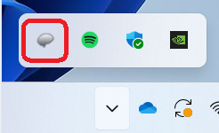
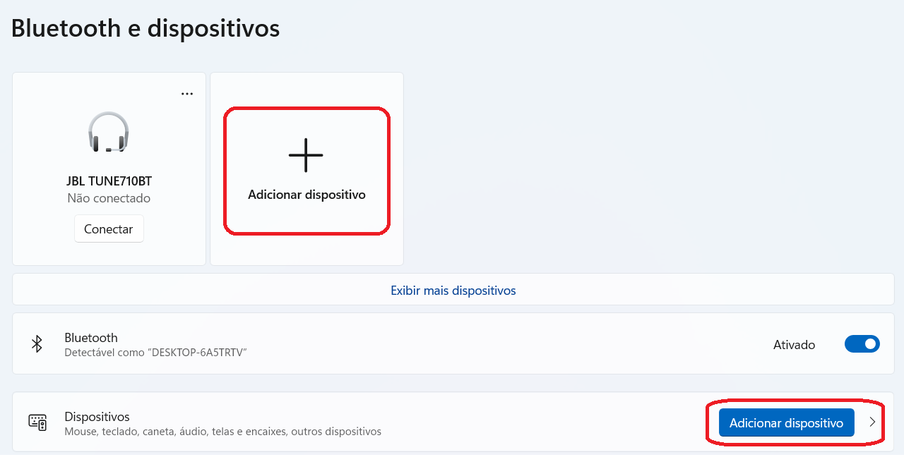
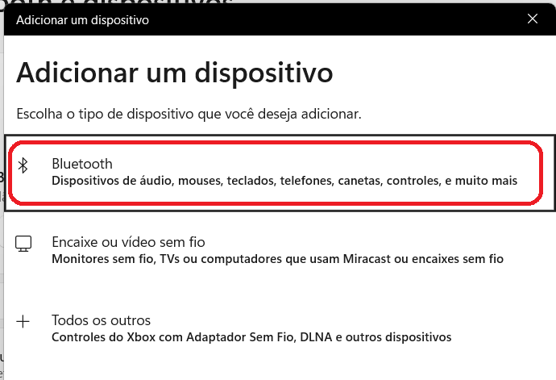
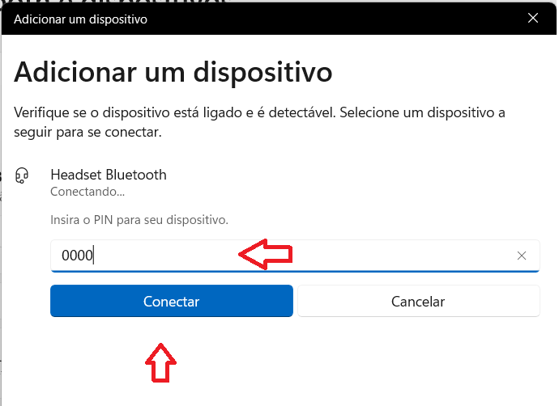
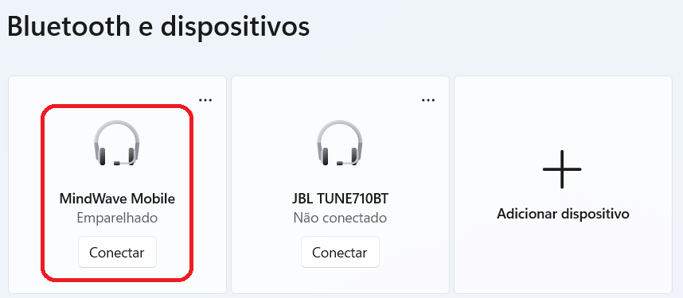

EEMUSIC - RECOMENDATION SYSTEM
Informações Do Projeto
Olá, primeiramente, obrigado por participar deste experimento. Não se preocupe, seus dados serão anônimos, nenhum nome será citado e nem questionado durante toda e qualquer experiência e/ou apresentação.
Sobre o que é o Projeto?
O projeto envolve algumas áreas do conhecimento, em sua base, resume-se num sistema de recomendação de músicas com base em dados cerebrais, captados por um EEG (Eletroencefalograma)
Como o processo/software funciona?
O processo é longo, mas, o resultado é satisfatório. Iniciamos com a coleta de dados, temos três tipos de dados sendo gerados a cada segundo. Os dados que vem do EEG, dados das músicas do Spotify e previsões geradas por um MLP (Machine Learning), tudo isso sendo salvo em um banco de dados pessoal. A imagem abaixo explica exatamente o processo do sistema como um todo:

Na primeira etapa, o usuário precisa dar o consentimento de uso dos dados em sua conta do Spotify. Esse consentimento, garante que a aplicação consiga buscar dados em tempo real do que está acontecendo em sua conta. Música que está tocando, artistas e gêneros são alguns exemplos que são buscados recorrentemente pela aplicação.
Na segunda etapa, considerando que tanto a conexão com o EEG quanto com o Spotify já foram devidamente configuradas, realiza-se a extração fundamental dos dados do usuário. Essa extração abrange informações gerais do eletroencefalograma e das músicas. Esses dados são coletados a cada intervalo de 1 segundo, resultando em uma extensa tabela que requer processamento.
Partindo para a etapa 3 e 4, submeteu-se a tabela geral de dados exportados a um processamento. Esse processamento compete a validação de dados que são realmente relevantes para o experimento. Além disso, como os dados são exportados a cada 1 segundo, precisou-se realizar a média dos dados ao longo to tempo, mais especificamente dos dados de atenção e meditação do usuário.
Após a exportação e processamento dos dados, chegamos à quinta etapa, na qual é obtido o dataset final do usuário. É claro que, para que seja possível analisar algumas interações e obter resultados significativos, o usuário precisa ter escutado um número mínimo de músicas. Nessa etapa, o dataset é disponibilizado ao usuário final, conforme apresentado na subetapa 5.1. Dessa forma, o usuário já recebe um feedback inicial e pode visualizar as músicas que já ouviu, juntamente com sua respectiva atenção.
A sexta etapa compreende a submissão do conjunto de dados do usuário a um algoritmo de Aprendizado de Máquina. Essa validação do modelo de Aprendizado de Máquina é de suma importância para aferir a confiabilidade e assertividade dos dados obtidos.
Com base na precisão dos dados obtida na fase anterior, a etapa sete consiste na criação de uma playlist que incorpora todos os dados previamente gerados e analisados. A SubEtapa 7.1 está diretamente integrada ao Spotify, uma vez que é por meio desse serviço que uma nova playlist é construída, contendo músicas que atendam a altos níveis de atenção do usuário final. Por fim, a etapa oito encerra o ciclo, fornecendo informações relevantes ao usuário final, como dados processados por meio de aprendizado de máquina e a playlist automaticamente gerada.
Quais são os requisitos para utilizar o sistema?
- Ter uma conta Spotify premium
- Ter um computador com conexão bluethoot e sistema operacional Windows
- O usuário deve realziar tarefas e/ou trabalho administrativo em frente ao computador
- A empresa do usuário permite o ato de ouvir música enquanto trabalha
- O usuário deve estar num ambiente com o menor ruído possível, recomendável que seja algum escritório calmo e sem o transito e/ou interação de pessoas.
- Utilizar o sistema por pelo menos 3 horas, se possível, sem interrupções
- O fone de ouvido a ser usado não pode ser um fone "Supra-Auricular", também conhecido como "On-ear". São aqueles fones que cobrem a orelha inteira, ou seja, você deve ter um fone intra-auricular. (fones pequenos que vão dentro do ouvido)
O que eu preciso fazer?
Ao clicar em "Próximo" você será guiado para um passo a passo com todas as informações e configurações necessárias para prosseguir com conexões do EEG
1. Formulário
O primeiro passo se trata do preenchimento de um formulário demográfico, este formulário serve para entendermos os usuários que vão utilizar do software. Depois de preencher o formulário, começamos com as configurações do aparelho (EEG) e do software
2. Conexões
O ThinkGear é responsável pela conexão com o EEG (Eletroencefalograma), no arquivo que você receceu, tem um executável com o nome dele para ser instalado.
Garantir Conexão
Precisamos garantir a conexão tanto com o bluethoot quanto no ThinkGear. Após instalar o ThinkGear, verifique se ele está habilitado em seu Windows, conforme na imangem abaixo
Após confirmar que está tudo certo com o ThinkGear, partimos para conexão bluethoot. Ligue o EEG e o bluethoot do seu computador, faça uma busca de dispositivos próximos e clique para emparelhar com o EEG. Abaixo você terá imagens para apoio no emparelhamento:
   OBSERVAÇÃO 1: O DISPOSITIVO IRÁ APARECER COMO EMPARELHADO, VOCÊ TENTARÁ APERTAR EM CONECTAR E ELE APRESENTARÁ ERRO DE CONEXÃO, PORÉM ISSO NÃO É UM PROBLEMA, POIS, O QUE FAZ A CONEXÃO COM O EEG É O THINKGEAR, ENTÃO, APENAS ESTANDO COMO EMPARELHADO ELE JÁ IRA FUNCIONAR
OBSERVAÇÃO 2: VOCÊ DEVE PAREAR COM UM DISPOSITIVO RECONHECIDO COMO DISPOSITIVO DE ÁUDIO EM SEU COMPUTADOR
SENHA DE EMPARELHAMENTO: 0000
EEMUSIC
Após garantir que o bluethoot e o ThinkGear estejam configurados e ativos, chegamos no software principal, o EEMUSIC. Ao rodar o executável ele tentará fazer a conexão com o EEG, após garantir a conexão, ele libera o botão de play e pause para iniciar a coleta de dados. Ao clicar em "Play" pela primeira vez você terá que conceder permissões da sua conta do Spotify, essa conseção é dada apenas na primeira vez que você starta o programa. Abaixo você vera uma lista de observações relevantes sobre o software.
Observações Sobre o EEMUSIC:
3. Considerações Finais
Obrigado por participar do experimento, vale ressaltar que esta é uma versão de MVP, então sim, tem muita coisa a ser melhorada e muitas ideias novas que podem ser implementadas. Você pode deixar seu feedback, relato de bugs e/ou melhorias diretamente para mim, me enviando uma mensagem no whatsapp. Estou muito grato pela ajuda e atenção